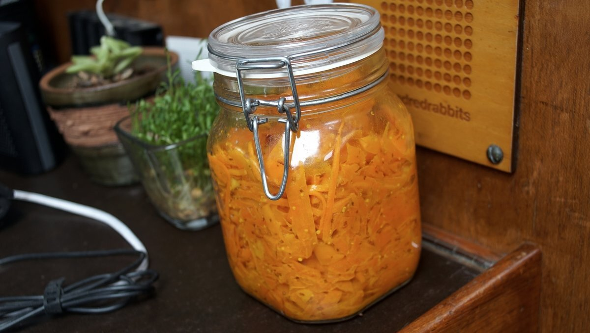

lactofermentation
We preserve food whenever possible. Preserving food by lacto-fermentation keeps vitamins intact, and in some vegetables, increases its nutritional value. Fermentation also improves the immune system, and digestibility of the food, making them easier for our systems to assimilate.
You don’t need to be an expert to preserve food, or any fancy technology. Just a container, some salt, and trust in the world of bacteria and fungi.
— A. Vansintjan, 2017.
Lacto-fermentation is easy to do, requiring only fresh vegetables, salt, water and air-tight containers. All vegetables can be fermented. Microbial activity occurs which secrete lactic acid, co2 and a variety of enzymes. Lactic acid inhibits the growth of bad bacteria. The mixture eventually achieves a state of balance, and fermentation stops. Conserving vegetables this way can last many years, even when stored at room temperature.
Lacto-fermentation is very safe, the PH of the mixture is so low (below 5) that no pathogens can survive. If ever a fermentation goes wrong, you'll smell it, and it'll be easy to spot, this makes accidentally eating a bad lacto-fermented product very difficult.
We make sauerkraut, kimchi and other pickled vegetables (carrots, beet root, garlic etc). We use the dry-salt method. The dry-salting method requires that vegetables be chopped or shredded, for only with lots of surface area exposed can the salt pull water out of the vegetables.

We recommended 45 g (3 tbsp) of salt (we use pickling salt, not iodized) per 2.3 kg (5 lbs) of vegetables. Salt essentially slows fermentation and enzyme activity and thereby prolongs preservation potential. Temperature also impacts upon the speed of fermentation (fermentation occurs faster in summer than winter). If we preserve vegetables with the goal of eating them much later, we add more salt, if the goal is to eat it as soon as it's ready, we use less.
Our favorite jar type is the spring-top variety with the rubber seal. If under pressure, the jar will 'burp' itself without letting air inside. We don't yet know if the metal spring will last at sea, but we're willing to try.
To start doing lacto-fermentation, we recommend this great kimchi recipe by Tout cru! Fermentation. Like the author of this recipe we usually just eat it after 2-3 days, but add kombu powder and use chili flakes instead of gochugaru.
For more about fermentation, we recommend the book The Art of Fermentation by Sandor Ellix Katz, and the blog Nicrunicuit(french) by Marie-Claire Frédéric. Remember, "fermentation is just controlled decay: your most important ingredient is time".
What to do when a jar is opened
Once we open a jar we go through them fast, usually within a week, but they can last for months. It is necessary to take a few precautions though...
- Use clean tools. Don't use a fork that's been in your mouth, and don't handle veg in the jar with your fingers
- Weigh veg down if in brine. Keeping everything submerged in the liquid will ensure they last. If too little remains in the jar but you're not ready to eat them, transfer to a smaller, clean jar.
- Close jar between servings. Don't leave it open unnecessarily.
- Store in a cool area. When opened, store in an area under 15 C.